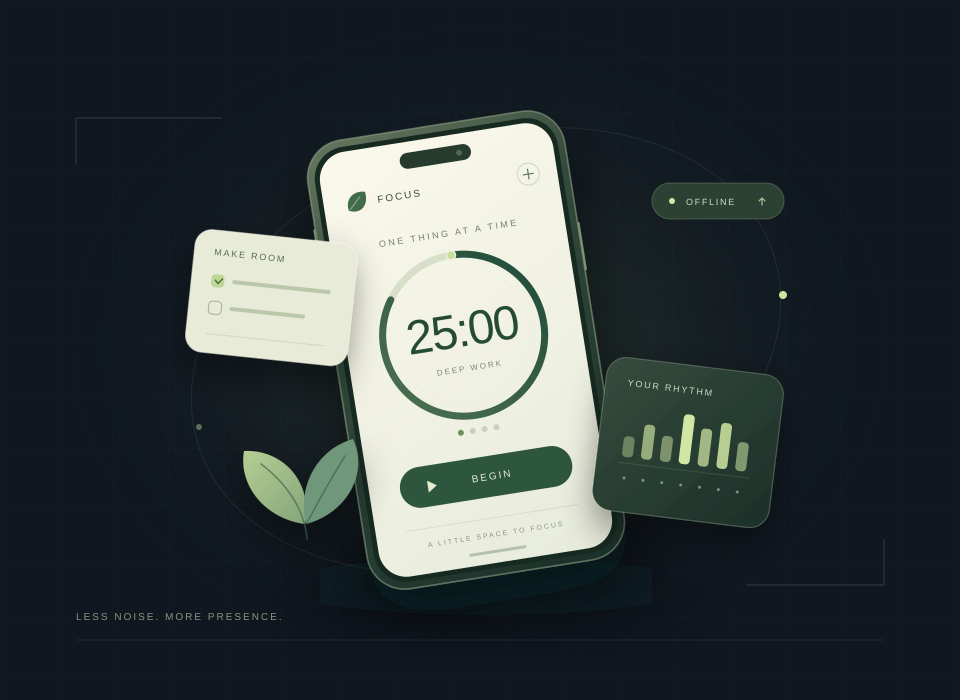

PROJECT 03 / 09FOCUS / STAY PRESENT
專注工具 · Android
Phnomy
選好時間，讓注意力回到眼前。
Phnomy 是一個 Android 專注 App，提供單次計時與番茄鐘。選定時間及允許使用的 App 後，透過本次鎖定的計畫減少分心；專注與休息期間都會覆蓋非白名單 App。資料保存在本機，不需要帳號或網路連線。

OVERVIEW
適合哪些使用情境？
適合想為讀書、工作或日常任務留出一段專注時間，並在開始前決定哪些 App 可以使用的人。可以快速開啟單次專注，也能以工作與休息交替的番茄鐘安排節奏。
FEATURES
功能特色
單次計時與番茄鐘
單次專注可選 25、50 分鐘，或自訂 1–180 分鐘。番茄鐘可調整工作、短休息、長休息時間與輪數，每 4 輪安排長休息。
開始前決定本次計畫
開始時鎖定時間與白名單，途中不能暫停、縮短時間或增加允許的 App。專注與所有休息期間都會覆蓋非白名單 App。
保留必要操作
電話、緊急撥號、系統設定、權限管理、主畫面及輸入法等必要功能保持可用，讓專注期間仍能處理必要操作。
有意識地提前結束
提前退出需填寫原因並等待 60 秒；可隨時取消退出，原計時照常繼續。若計畫先自然結束，結果仍以完成為準。
階段提醒與選用勿擾
提供進度與計時結束通知，番茄鐘工作和休息結束也會提醒。提示音、振動與通知呈現依系統授權、音量及勿擾設定；勿擾功能可自行選用。
本機歷史與使用統計
查看專注歷史、完成率與攔截紀錄。手機 App 使用合計需選用使用情況權限；未授權顯示「—」，系統彙總可能包含分割畫面重疊時間，並非精確亮屏時間。
GETTING STARTED
如何開始
安裝最新 APK
從 GitHub Releases 下載最新發行 APK，在 Android 12 或以上裝置安裝並開啟 Phnomy。
選時間與白名單
選擇單次專注或番茄鐘，設定時間與輪數，加入本次允許使用的 App。開始後無法暫停或增加白名單。
授予必要權限
按開始後，在檢查頁閱讀無障礙用途並啟用服務，再允許「鬧鐘與提醒」特殊存取。返回 App，等服務連接完成後再開始。
開啟提醒並開始專注
可在檢查頁選擇「開啟計時結束提醒」並允許通知，也可略過；未允許通知時只能在 App 內查看完成結果。確認本次計畫與服務狀態後開始專注。
REQUIREMENTS
系統需求
- Android
- Android 12 / API 31 或以上。
- 必要權限
- 無障礙服務與「鬧鐘與提醒」特殊存取，用於覆蓋非白名單 App 及背景階段切換。
- 選用權限
- 通知、使用情況存取與勿擾存取，依需要自行開啟。
- 資料與連線
- 資料保存在本機；App 沒有網路權限，不需帳號，也沒有廣告或分析追蹤。
GOOD TO KNOW
常見問題
這是無法解除的手機鎖嗎？
不是。Phnomy 是一般安裝的 App，透過使用者授權的無障礙服務運作，並非裝置管理鎖。仍可撤銷權限、強制停止或解除安裝。服務只讀取視窗所屬套件資訊，不讀取畫面文字、聊天或輸入內容，也不擷取螢幕。
可以完全離線嗎？解除安裝後資料還在嗎？
可以離線使用，所有資料留在本機，沒有帳號、廣告或分析追蹤。系統備份已停用，解除安裝會刪除本機設定與歷史資料。
背景計時與結束通知有哪些限制？
計時包含螢幕關閉與裝置睡眠時間；重開機、必要權限失效或保護服務中斷會記為「中斷」。通知、聲音與振動仍受系統授權、音量及勿擾設定影響。不同品牌的省電與背景限制需在實際裝置確認，並非所有裝置都已完成實機驗收。
無障礙設定無法開啟時怎麼辦？
部分 Android 13 以上裝置會限制側載 App。可在系統的 Phnomy App 資訊右上角選單允許「受限制的設定」，再到無障礙設定啟用服務；各品牌的選單名稱可能不同。
DOCUMENTATION
完整說明與回饋
詳細功能、權限用途與資料處理方式以項目 README 為準。遇到問題或有新想法，可在 GitHub Issues 提出。